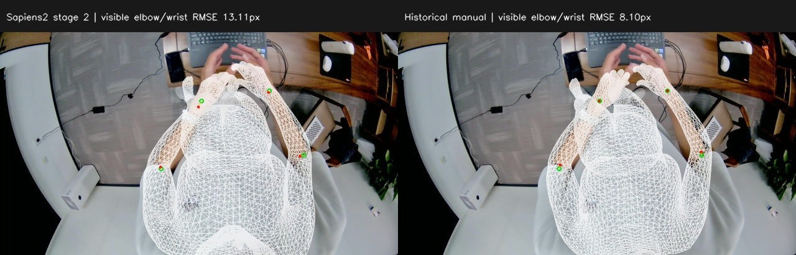
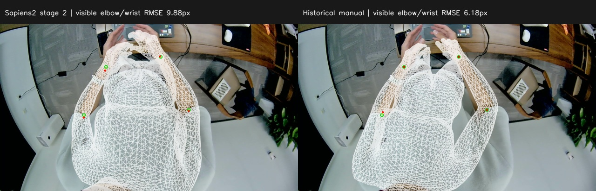
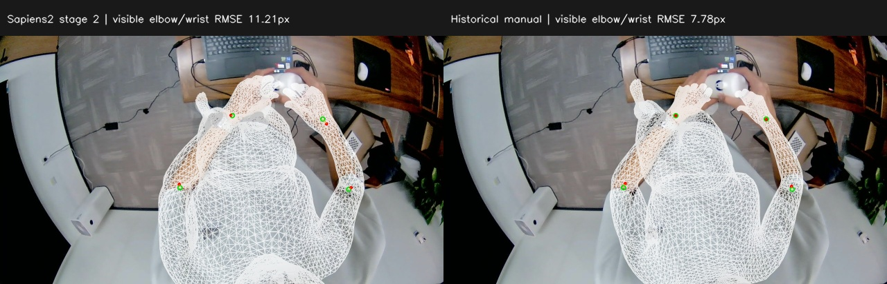
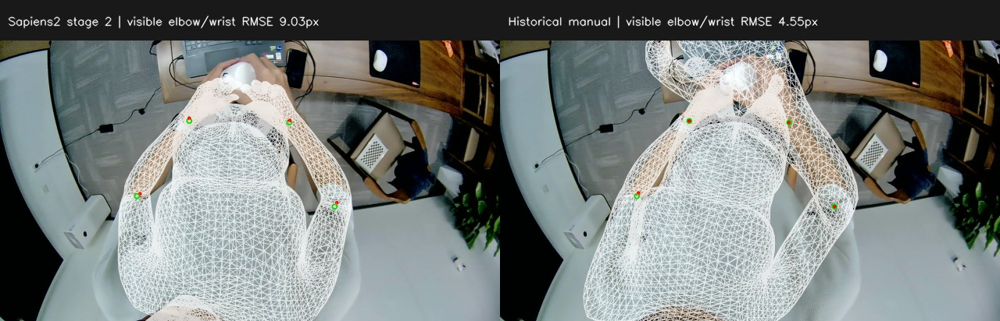
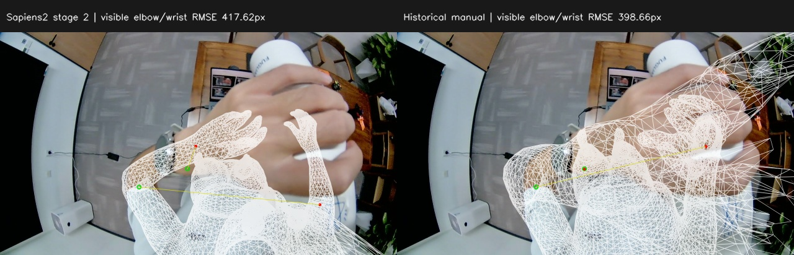
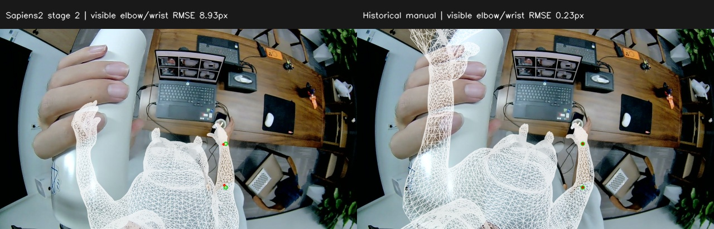
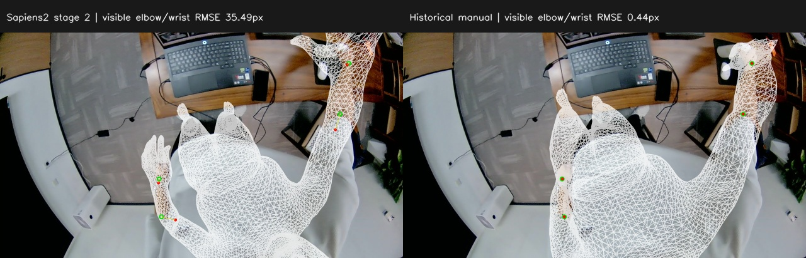
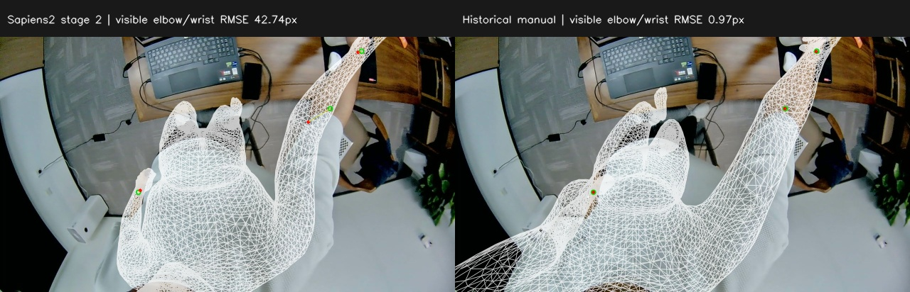

新增：session_hand_6 八帧全自动三阶段网格对比（2026-09-26）
Sapiens2轮廓约束优化：八帧前后对比（2026-09-21）
Sapiens2八帧人体部位分割与网格轮廓对照（2026-09-21）
标准手臂形状约束与腕部接缝修正：八帧对比（2026-09-20）
新增：纯自动 WiLoR 手部网格缝合 · 与 figure9.2 逐帧对比
自动拟合不使用人工标注。下表为同一组人工可见肘腕点 RMSE（px）；人工方法曾拟合这些标注，且优化自由度及角度上限不同。
| 条件 / 相机 | 原始网络 | 自动第一阶段 | 自动第二阶段 | 既有人工最终结果 |
|---|---|---|---|---|
| 正常姿态 / cam3 | 241.80 | 34.74 | 13.11 | 8.10 |
| 正常姿态 / cam4 | 165.13 | 32.89 | 9.88 | 6.18 |
| 手物交互 / cam3 | 244.41 | 43.29 | 11.21 | 7.78 |
| 手物交互 / cam4 | 161.53 | 46.74 | 9.03 | 4.55 |
| 手物遮挡 / cam3 | 485.39 | 407.36 | 417.62 | 398.66 |
| 手物遮挡 / cam4 | 197.33 | 25.15 | 8.93 | 0.23 |
| 失败场景 / cam3 | 1898.72 | 50.45 | 35.49 | 0.44 |
| 失败场景 / cam4 | 4078.27 | 76.97 | 42.74 | 0.97 |
遮挡 cam3 需单独复核：人工左右肘命名疑似不一致，且自动右肘低分并被遮挡；该点主导全量RMSE。标注和主结果均未改动。查看证据与敏感性统计。
并排图：左为自动第二阶段，右为人工最终结果。四阶段图：左上原始，右上自动第一阶段，左下自动第二阶段，右下人工。绿圈为人工肘腕，红点为模型投影。








# 八帧 Sapiens2 自动两阶段与历史人工结果对比 完成用户指定的 condition_01 至 condition_04、cam3/cam4 共 8 帧。自动拟合不读取人工标注，历史人工 NPZ 仅作事后对照。所有结果位于本次新的 v2 目录；v1 失败记录保留。 [交互对比页](comparison/index.html) · [逐帧 CSV](comparison/per_frame_metrics.csv) · [完整比较 JSON](comparison/comparison_report.json) ## 结果：同一组人工可见点的二维误差 以下为原图像素中的 pooled RMSE：先汇集所有符合可见标记的点，再对平方误差求均值开方。人工方法曾拟合这些标注，自动方法未使用；本表不是留出集泛化评估。所有方法使用完全相同的评价点和标定。 | 方法 | 肘腕 | 肩肘腕 | 身体辅助指标 | |---|---:|---:|---:| | 原始网络 | 1558.17 | 1282.71 | 949.97 | | 自动第一阶段 | 119.64 | 124.78 | 101.51 | | 自动第二阶段 | 115.69 | 116.02 | 94.09 | | 既有人工最终结果 | 108.63 | 128.66 | 102.97 | 肘腕共 27 个可见点；肩肘腕共 40 点；身体辅助指标共 74 点，增加颈根、骨盆中心、膝和踝。颈根与骨盆中心的语义映射近似，单独作为辅助指标。脚趾/足跟仅在 JSON 的 all_mapped 指标中列出，掌心没有纳入直接关节比较。 | 条件 | 相机 | 原始肘腕 | 自动第一阶段 | 自动第二阶段 | 人工最终 | 自动点数量 | |---|---|---:|---:|---:|---:|---:| | 正常姿态 | cam3 | 241.80 | 34.74 | 13.11 | 8.10 | 13 | | 正常姿态 | cam4 | 165.13 | 32.89 | 9.88 | 6.18 | 13 | | 手物交互 | cam3 | 244.41 | 43.29 | 11.21 | 7.78 | 13 | | 手物交互 | cam4 | 161.53 | 46.74 | 9.03 | 4.55 | 13 | | 手物遮挡 | cam3 | 485.39 | 407.36 | 417.62 | 398.66 | 10 | | 手物遮挡 | cam4 | 197.33 | 25.15 | 8.93 | 0.23 | 13 | | 失败场景 | cam3 | 1898.72 | 50.45 | 35.49 | 0.44 | 12 | | 失败场景 | cam4 | 4078.27 | 76.97 | 42.74 | 0.97 | 13 | 自动第二阶段肘腕误差优于原始网络：8/8 帧；优于既有人工结果：0/8 帧。这里仅比较指定肘腕指标。 ## 执行和初始化 从原始推理文件的 global_orient_network/transl_network 恢复真实网络整体参数，保留 body_pose、体型、双手和面部字段，CPU 重建配套几何。准备的 8 份初值与历史 raw_network 基线的所有 SMPL-X 参数逐元素一致；没有用人工最终参数初始化。原始推理文件中的 global_orient/transl 已经被 PositionNet 校正，因此没有直接拿来充当原始网络初值。 cam3 使用 DownwardStereo6/cam3_left_lower.egosmplx.json，cam4 使用 cam4_right_lower.egosmplx.json。图像和标定均为 1280×720。保留既有 Scaramuzza 多项式模型、相机轴约定和内参。 使用交接目录的原始推理和优化 Python 脚本：第一阶段 1800 步，仅优化 global_orient/transl；第二阶段从对应第一阶段 NPZ 开始，1600 步，优化 19 个 body_pose 关节与 global_orient/transl。先验、学习率、分数阈值、角度上限、手腕距离和深度约束全部保持。8 帧独立运行，没有跨帧或跨相机平滑。 ## 投影精度修复 v1 首帧因像素重载差 0.71405 px 中止，而网格差仅 3.5763e-7 m。已定位为高阶多项式大系数在 FP32 下相消：旧实现与 NumPy FP64 参考的最大差在各帧为约 1–3.11 px。v2 用 stable_projection.py 在本次进程内以 FP64 Horner 形式计算同一多项式，输出保持 FP32；不修改标定、不修改交接脚本或共享仓库，不删除或放宽断言。8 帧全部通过有限差分梯度检查，针对原始 25 点与 NumPy FP64 的差均 <0.008 px。详见 precision_validation.json。 ## 数值验收 | 条件/相机 | 最小深度 m | 左腕/初值 | 右腕/初值 | 网格重载误差 m | 像素重载误差 px | |---|---:|---:|---:|---:|---:| | 正常姿态/cam3 | 0.029192 | 141.12% | 134.22% | 0 | 0 | | 正常姿态/cam4 | 0.029560 | 117.48% | 107.02% | 0 | 0 | | 手物交互/cam3 | 0.029293 | 118.39% | 118.73% | 0 | 0 | | 手物交互/cam4 | 0.029377 | 125.24% | 122.02% | 0 | 0 | | 手物遮挡/cam3 | 0.029610 | 137.51% | 187.41% | 0 | 0 | | 手物遮挡/cam4 | 0.029725 | 129.97% | 99.26% | 0 | 0 | | 失败场景/cam3 | 0.126859 | 85.03% | 91.68% | 0 | 0 | | 失败场景/cam4 | 0.029468 | 99.29% | 134.65% | 0 | 0 | 每帧推理、两阶段和独立验收均正常完成。数值字段有限；第一阶段 body_pose 不变；体型、双手指、下颌、眼球、表情逐元素保持，第二阶段左右 Foot 不变。网格重载阈值仍为 1e-5 m、像素阈值仍为 0.01 px。最终全局增量≤8°、所有关节在原上限内，最小深度≥0.02 m，腕距≥第一阶段初值的85%。触及上限关节： - 正常姿态/cam3: L_Hip, R_Hip, Spine_2, Spine_3, L_Knee, Neck, Head, L_Collar, R_Collar, L_Wrist - 正常姿态/cam4: R_Hip, Spine_1, Spine_2, Spine_3, Neck, Head, L_Collar, R_Collar - 手物交互/cam3: L_Hip, Spine_1, Spine_2, Spine_3, Neck, Head, L_Collar, R_Collar, L_Shoulder, L_Elbow - 手物交互/cam4: Spine_1, Spine_2, Spine_3, Neck, Head, L_Collar, R_Collar, L_Elbow - 手物遮挡/cam3: L_Hip, Spine_2, Spine_3, Neck, Head, L_Collar, R_Collar, R_Shoulder - 手物遮挡/cam4: Spine_1, Spine_2, Spine_3, Neck, Head, L_Collar, R_Collar, L_Shoulder - 失败场景/cam3: 无 - 失败场景/cam4: L_Hip, Spine_1, R_Knee, Neck, Head, L_Collar, L_Shoulder, R_Shoulder, L_Elbow, R_Elbow ## 对照含义与视觉复核 历史人工流程采用标定射线拟合，第二阶段固定整体参数、主要放开手臂，肩/肘上限为95°/100°，本次为28°/25°；历史流程还把 Neck/Head 置零。两者优化范围、约束和关键点来源均不同，因此这是既有方法的实际结果对比，不能归因于仅替换自动/人工二维点。stage3_hands 虽命名为手部阶段，历史报告表明手指由于缺少足够观测保持原始姿态。 comparison 中的所有新对比图均使用同一白色网格渲染器和原图，同样裁去负深度/非有限或投影跨度过大的边，避免旧图绘制规则差异干扰比较。各帧原始交接脚本生成的叠加图也保留。绿色圈为人工可见肘腕目标，红点为相应模型投影，黄线为残差。渲染裁剪不改变参数或数值评价。 视觉检查结论见同目录 VISUAL_REVIEW_zh.md；二维误差下降不证明真实三维准确。 ## 逐帧产物 最终参数在 frames/<condition>/<cam>/stage2/automatic/refined_params.npz，网格在同目录 refined_mesh.obj；每帧有 rigid/stage2 日志、原始叠加图、独立 acceptance_report.json。 - 正常姿态/cam3: [参数](frames/condition_01_normal_pose/cam3/stage2/automatic/refined_params.npz) · [网格](frames/condition_01_normal_pose/cam3/stage2/automatic/refined_mesh.obj) · [自动/人工图](comparison/images/cam3_left_lower_t15.000s_f000895_auto_vs_manual.jpg) - 正常姿态/cam4: [参数](frames/condition_01_normal_pose/cam4/stage2/automatic/refined_params.npz) · [网格](frames/condition_01_normal_pose/cam4/stage2/automatic/refined_mesh.obj) · [自动/人工图](comparison/images/cam4_right_lower_t15.000s_f000895_auto_vs_manual.jpg) - 手物交互/cam3: [参数](frames/condition_02_hand_object_interaction/cam3/stage2/automatic/refined_params.npz) · [网格](frames/condition_02_hand_object_interaction/cam3/stage2/automatic/refined_mesh.obj) · [自动/人工图](comparison/images/cam3_left_lower_t037.000s_f002209_auto_vs_manual.jpg) - 手物交互/cam4: [参数](frames/condition_02_hand_object_interaction/cam4/stage2/automatic/refined_params.npz) · [网格](frames/condition_02_hand_object_interaction/cam4/stage2/automatic/refined_mesh.obj) · [自动/人工图](comparison/images/cam4_right_lower_t037.000s_f002208_auto_vs_manual.jpg) - 手物遮挡/cam3: [参数](frames/condition_03_hand_object_occlusion/cam3/stage2/automatic/refined_params.npz) · [网格](frames/condition_03_hand_object_occlusion/cam3/stage2/automatic/refined_mesh.obj) · [自动/人工图](comparison/images/cam3_left_lower_t45.000s_f002686_auto_vs_manual.jpg) - 手物遮挡/cam4: [参数](frames/condition_03_hand_object_occlusion/cam4/stage2/automatic/refined_params.npz) · [网格](frames/condition_03_hand_object_occlusion/cam4/stage2/automatic/refined_mesh.obj) · [自动/人工图](comparison/images/cam4_right_lower_t45.000s_f002686_auto_vs_manual.jpg) - 失败场景/cam3: [参数](frames/condition_04_failure_case/cam3/stage2/automatic/refined_params.npz) · [网格](frames/condition_04_failure_case/cam3/stage2/automatic/refined_mesh.obj) · [自动/人工图](comparison/images/cam3_left_lower_t35.000s_f002089_auto_vs_manual.jpg) - 失败场景/cam4: [参数](frames/condition_04_failure_case/cam4/stage2/automatic/refined_params.npz) · [网格](frames/condition_04_failure_case/cam4/stage2/automatic/refined_mesh.obj) · [自动/人工图](comparison/images/cam4_right_lower_t35.000s_f002089_auto_vs_manual.jpg) ## 遮挡cam3异常点说明 该帧人工 right_elbow=(448,500) 与同侧 left_wrist 的命名疑似不一致，且对应 Sapiens2 右肘只有0.32分、位于遮挡区域。未改动标注或主结果。自动/人工右肘误差为585.44/563.79 px，主导全量RMSE。单独排除整帧的敏感性分析中，剩余7帧肘腕RMSE为自动22.44 px、人工5.46 px；仅用于说明异常帧影响。详见 [视觉复核](VISUAL_REVIEW_zh.md)。
# 八帧逐图视觉复核 已实际逐张查看八幅自动第二阶段/既有人工最终结果并排图，以及正常 cam3、遮挡 cam3 的 Sapiens2 原图检测图。并排图左右分别为自动/人工，所有对比使用相同标定和网格绘制规则。以下观察没有用于重新选择自动优化候选。 | 场景/相机 | 视觉观察 | |---|---| | 正常/cam3 | 两者都恢复了前臂的主要位置。自动左腕仍偏移约21.64 px，人工腕点更贴合；手指轮廓均未完全贴合真实手形。 | | 正常/cam4 | 自动前臂位置接近原图，左腕仍约16.26 px误差；人工肘腕更准，但躯干与肩部形状也有偏差。 | | 交互/cam3 | 两者主要前臂和抓杯位置均较接近。自动右腕约17.49 px误差；未优化手指，不能据此声称准确恢复抓握。 | | 交互/cam4 | 自动腕部与手部投影相对集中。人工虽肘腕RMSE更低，但图像右上方可见明显放大的手部网格，关节点精确不代表完整手网格准确。 | | 遮挡/cam3 | 两者都未准确恢复遮挡下完整手臂/手部。自动左腕约77.97 px偏差；人工左腕约0.82 px，但存在大面积延伸的网格。此帧还有下述左右肘标注疑点。 | | 遮挡/cam4 | 右侧可见前臂两者接近，人工肘腕点更准。靠镜头的另一只手自动网格偏小且错位，人工手网格则明显延伸至画面顶部；遮挡手不能仅凭可见右肘腕指标判断。 | | 失败/cam3 | 两者均把抬起手臂拉回主要位置。自动双肘仍约45.63/52.24 px误差，人工对应点更贴合；自动大幅改善原始结果但未修正所有局部形态。 | | 失败/cam4 | 自动右肘约72.97 px误差，人工右肘约0.62 px；人工图像左下仍有延伸网格。自动全网格正深度通过，人工此帧部分顶点在相机后方。 | ## 遮挡 cam3 的标注疑点 原标注文件 `cam3_left_lower_t45.000s_f002686_keypoints.json` 标明： - `right_elbow=(448,500), visible=1`，`left_elbow` 不可见。 - `left_wrist=(604,441), visible=1`，`right_wrist` 不可见。 原图戴表侧的可见前臂位于图像左方。人工“右肘”点位于该可见肘附近，而同一侧腕被标为“左腕”；Sapiens2 的 `left_elbow=(440.35,471.66)` 也位于这里。由图像和命名关系判断，**疑似存在左右肘标注不一致，需要复核，尚未更正**。 Sapiens2 的 `right_elbow=(1030.94,587.92)` 位于严重遮挡区域，score=0.3203125，仍通过0.3阈值。这个自动点自身也缺乏可靠可见性依据。 按原标注不做调整计算，右肘误差自动为585.44 px、人工为563.79 px，主导了全量肘腕RMSE。因此保留全量结果的同时，提供“排除整个遮挡cam3帧”的敏感性统计，**仅用于解释该帧的影响，不替代主结果**： | 剩余7帧、25个肘腕点 | pooled RMSE（px） | |---|---:| | 原始网络 | 1613.46 | | 自动第一阶段 | 46.74 | | 自动第二阶段 | 22.44 | | 历史人工 | 5.46 | 没有交换左右标签、删除单个大误差点、用人工标注调整自动损失或重跑择优。 ## 自动可见性与三维限制 正常cam3的脸部不在画面内，但 Sapiens2 在衣服上预测了鼻点，score约0.36，超过原阈值。这解释了为什么保留当前13类目标并不能保证每个约束都有真实图像依据。对其他帧不可见的腿、髋或遮挡手部，热图分数同样不能当作可靠可见性概率。 自动8帧全网格满足最小深度约束，最小z范围为0.02919–0.12686 m；手指与体型按要求固定。历史人工的遮挡cam4和失败cam4最小z分别约-0.02712/-0.07346 m，比较图对负深度三角形做相同裁剪。裁剪仅用于可视化，未改变比较参数或误差。 数值验收通过与视觉拟合成功是不同结论。本次结果能修复原始网络的大幅整体错位，但对于隐藏部位、手指、衣物轮廓和真实三维深度，不能仅凭二维肘腕误差确认准确。
{kind=link}
{kind=link}
{kind=link}
{kind=link}
{kind=link}
{kind=link}
{kind=link}
{kind=link}
{kind=link}
{kind=link}
{kind=link}
{kind=link}
{kind=link}
{kind=link}
{kind=link}
{kind=link}